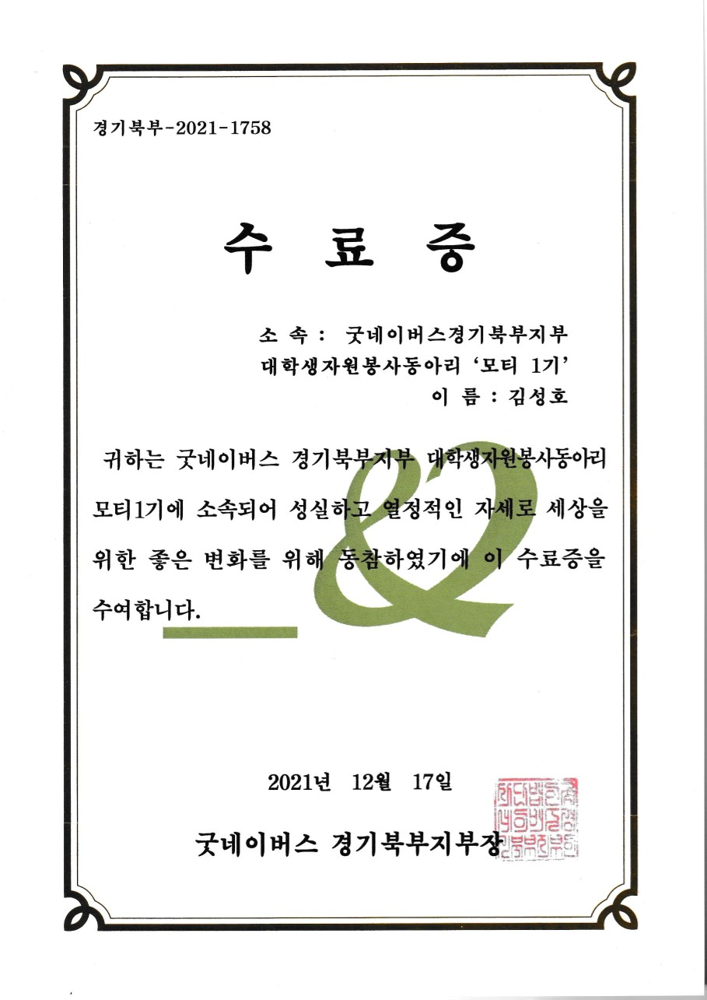

I participated in the Pyeongchang Youth Peace Forum during the Pyeongchang Olympics, where students discussed global peacebuilding challenges and proposed practical solutions through collaborative policy based projects. This experience gave me early exposure to international dialogue, public problem solving, and the value of structured communication across cultures.
I received 3rd Prize at the Youth Peace Challenge, which recognized the quality of our proposal and our contribution to peacebuilding discussions. More importantly, this experience taught me how strong ideas can emerge when people from different backgrounds approach global problems with empathy, structure, and shared purpose. It became one of the earliest experiences that shaped my interest in using analysis and problem solving for broader social impact.
